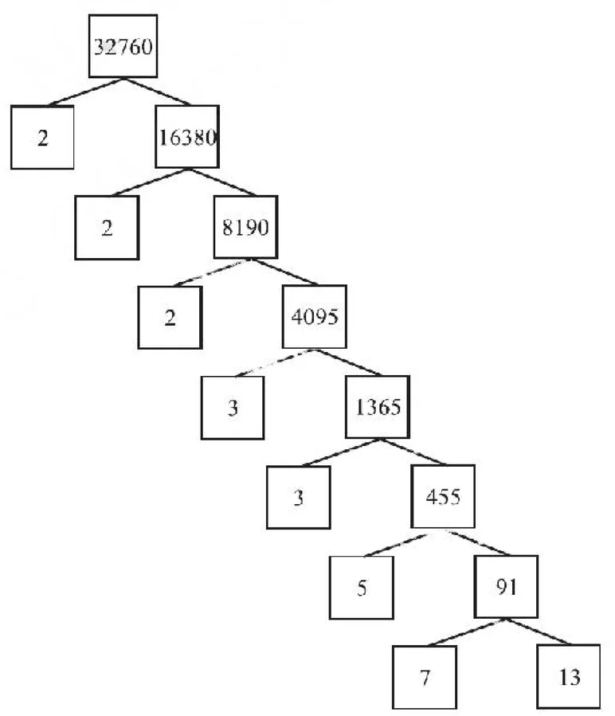

In your earlier classes, you have seen that any natural number can be written as a product of its prime factors. For instance, \(2 = 2\), \(4 = 2 \times 2\), \(253 = 11 \times 23\), and so on. Now, let us try and look at natural numbers from the other direction. That is, can any natural number be obtained by multiplying prime numbers? Let us see.
Take any collection of prime numbers, say 2, 3, 7, 11 and 23. If we multiply some or all of these numbers, allowing them to repeat as many times as we wish, we can produce a large collection of positive integers (In fact, infinitely many). Let us list a few :
\(7 \times 11 \times 23 = 1771\) \(3 \times 7 \times 11 \times 23 = 5313\)
\(2 \times 3 \times 7 \times 11 \times 23 = 10626\) \(2^{3} \times 3 \times 7^{3} = 8232\)
\(2^{2} \times 3 \times 7 \times 11 \times 23 = 21252\)
and so on.

Now, let us suppose your collection of primes includes all the possible primes. What is your guess about the size of this collection? Does it contain only a finite number of integers, or infinitely many? Infact, there are infinitely many primes. So, if we combine all these primes in all possible ways, we will get an infinite collection of numbers, all the primes and all possible products of primes. The question is – can we produce all the composite numbers this way? What do you think? Do you think that there may be a composite number which is not the product of powers of primes? Before we answer this, let us factorise positive integers, that is, do the opposite of what we have done so far.
We are going to use the factor tree with which you are all familiar. Let us take some large number, say, 32760, and factorise it as shown.
So we have factorised 32760 as \(2 \times 2 \times 2 \times 3 \times 3 \times 5 \times 7 \times 13\) as a product of primes, i.e., \(32760 = 2^{3} \times 3^{2} \times 5 \times 7 \times 13\) as a product of powers of primes. Let us try another number, say, 123456789. This can be written as \(3^{2} \times 3803 \times 3607\). Of course, you have to check that 3803 and 3607 are primes! (Try it out for several other natural numbers yourself.) This leads us to a conjecture that every composite number can be written as the product of powers of primes. In fact, this statement is true, and is called the Fundamental Theorem of Arithmetic because of its basic crucial importance to the study of integers. Let us now formally state this theorem.
Theorem 1.1 (Fundamental Theorem of Arithmetic) : Every composite number can be expressed (factorised) as a product of primes, and this factorisation is unique, apart from the order in which the prime factors occur.
The Fundamental Theorem of Arithmetic says that every composite number can be factorised as a product of primes. Actually it says more. It says that given any composite number it can be factorised as a product of prime numbers in a ‘unique’ way, except for the order in which the primes occur. That is, given any composite number there is one and only one way to write it as a product of primes, as long as we are not particular about the order in which the primes occur. So, for example, we regard \(2 \times 3 \times 5 \times 7\) as the same as \(3 \times 5 \times 7 \times 2\), or any other possible order in which these primes are written. This fact is also stated in the following form:
The prime factorisation of a natural number is unique, except for the order of its factors.
In general, given a composite number x, we factorise it as \(x = p_{1}p_{2} \ldots p_{n}\), where \(p_{1}, p_{2}, \ldots, p_{n}\) are primes and written in ascending order, i.e., \(p_{1} \le p_{2} \le \ldots \le p_{n}\). If we combine the same primes, we will get powers of primes. For example,
\(32760 = 2 \times 2 \times 2 \times 3 \times 3 \times 5 \times 7 \times 13 = 2^{3} \times 3^{2} \times 5 \times 7 \times 13\)
Once we have decided that the order will be ascending, then the way the number is factorised, is unique.
The Fundamental Theorem of Arithmetic has many applications, both within mathematics and in other fields. Let us look at some examples.
Example 1 :
Consider the numbers \(4^{n}\), where n is a natural number. Check whether there is any value of n for which \(4^{n}\) ends with the digit zero.
Solution :
If the number \(4^{n}\), for any n, were to end with the digit zero, then it would be divisible by 5. That is, the prime factorisation of \(4^{n}\) would contain the prime 5. This is not possible because \(4^{n} = (2)^{2n}\); so the only prime in the factorisation of \(4^{n}\) is 2. So, the uniqueness of the Fundamental Theorem of Arithmetic guarantees that there are no other primes in the factorisation of \(4^{n}\). So, there is no natural number n for which \(4^{n}\) ends with the digit zero.
You have already learnt how to find the HCF and LCM of two positive integers using the Fundamental Theorem of Arithmetic in earlier classes, without realising it! This method is also called the prime factorisation method. Let us recall this method through an example.
Example 2 :
Find the LCM and HCF of 6 and 20 by the prime factorisation method.
Solution :
We have : \(6 = 2^{1} \times 3^{1}\) and \(20 = 2 \times 2 \times 5 = 2^{2} \times 5^{1}\).
You can find \(\text{HCF}(6, 20) = 2\) and \(\text{LCM}(6, 20) = 2 \times 2 \times 3 \times 5 = 60\), as done in your earlier classes.
Note that \(\text{HCF}(6, 20) = 2^{1}\) = Product of the smallest power of each common prime factor in the numbers.
\(\text{LCM}(6, 20) = 2^{2} \times 3^{1} \times 5^{1}\) = Product of the greatest power of each prime factor, involved in the numbers.
From the example above, you might have noticed that \(\text{HCF}(6, 20) \times \text{LCM}(6, 20) = 6 \times 20\). In fact, we can verify that for any two positive integers a and b, \(\text{HCF}(a, b) \times \text{LCM}(a, b) = a \times b\). We can use this result to find the LCM of two positive integers, if we have already found the HCF of the two positive integers.
Example 3 :
Find the HCF of 96 and 404 by the prime factorisation method. Hence, find their LCM.
Solution :
The prime factorisation of 96 and 404 gives :
\(96 = 2^{5} \times 3, \quad 404 = 2^{2} \times 101\)
Therefore, the HCF of these two integers is \(2^{2} = 4\).
Also, \(\text{LCM}(96, 404) = \dfrac{96 \times 404}{\text{HCF}(96, 404)} = \dfrac{96 \times 404}{4} = 9696\)
Example 4 :
Find the HCF and LCM of 6, 72 and 120, using the prime factorisation method.
Solution :
We have :
\(6 = 2 \times 3, \quad 72 = 2^{3} \times 3^{2}, \quad 120 = 2^{3} \times 3 \times 5\)
Here, \(2^{1}\) and \(3^{1}\) are the smallest powers of the common factors 2 and 3, respectively.
So, \(\text{HCF}(6, 72, 120) = 2^{1} \times 3^{1} = 2 \times 3 = 6\)
\(2^{3}\), \(3^{2}\) and \(5^{1}\) are the greatest powers of the prime factors 2, 3 and 5 respectively involved in the three numbers.
So, \(\text{LCM}(6, 72, 120) = 2^{3} \times 3^{2} \times 5^{1} = 360\)
Remark : Notice, \(6 \times 72 \times 120 \ne \text{HCF}(6, 72, 120) \times \text{LCM}(6, 72, 120)\). So, the product of three numbers is not equal to the product of their HCF and LCM.